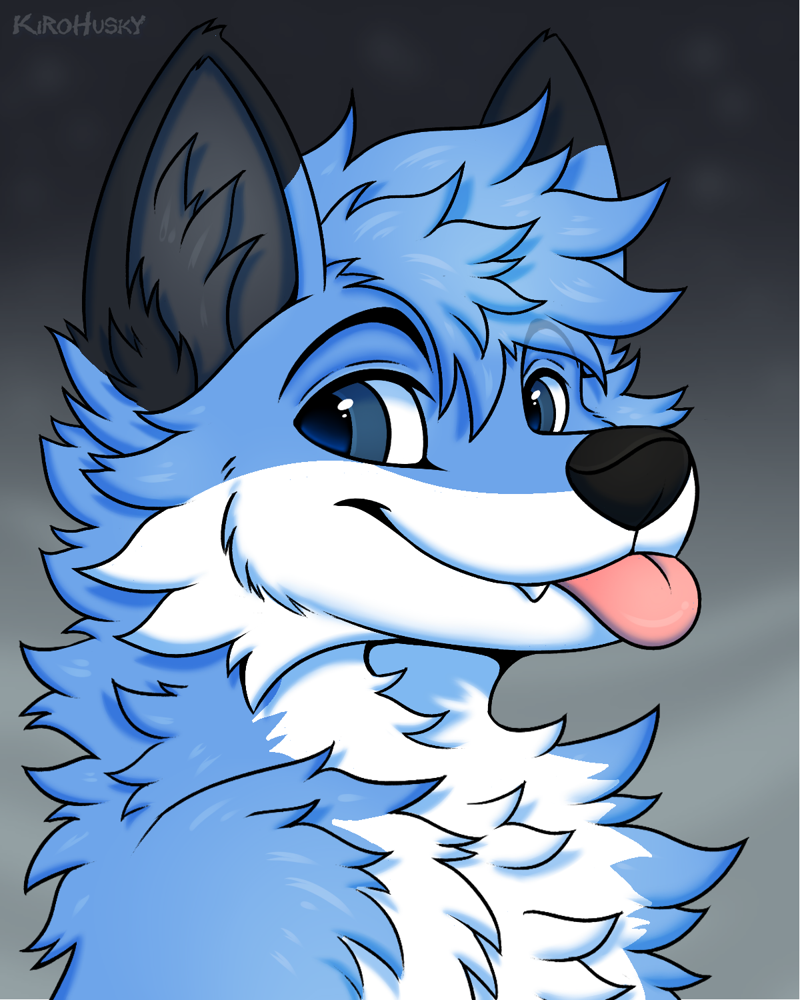
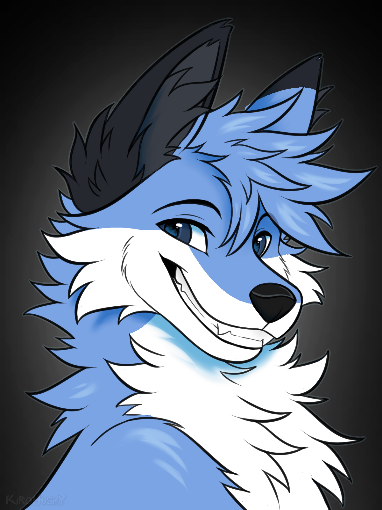
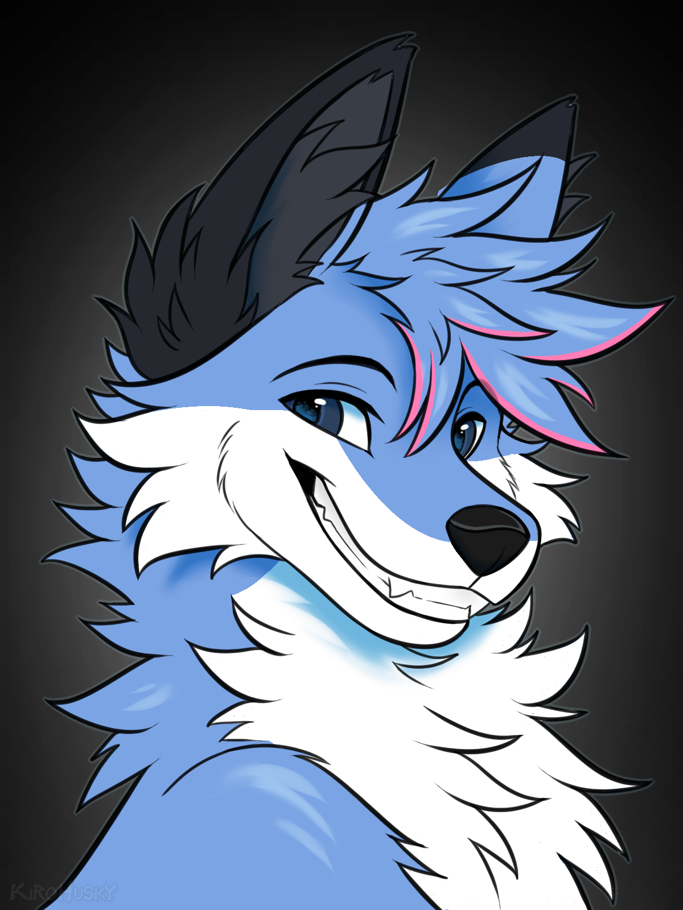
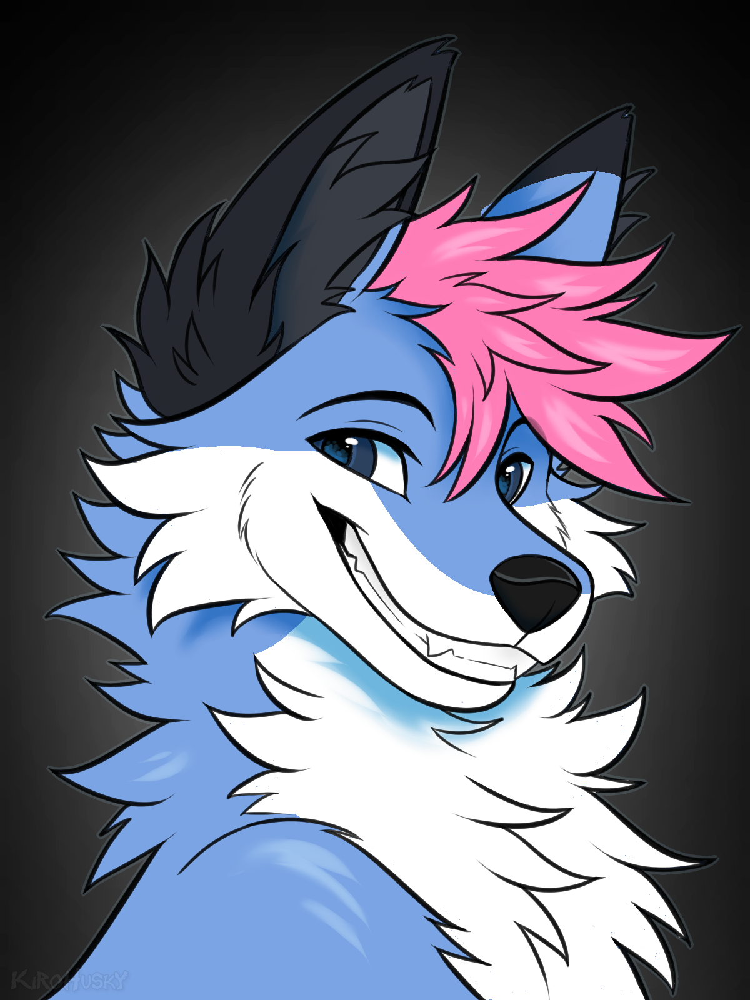
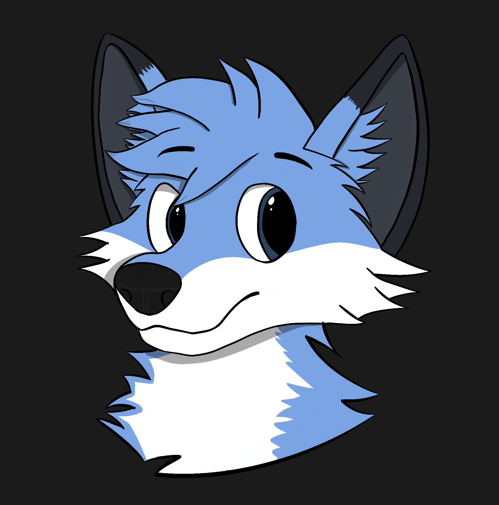
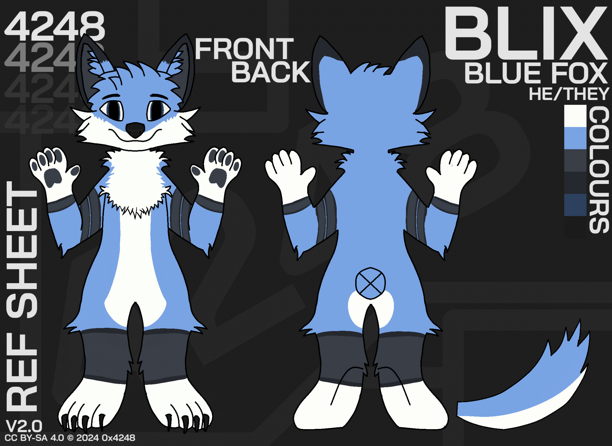
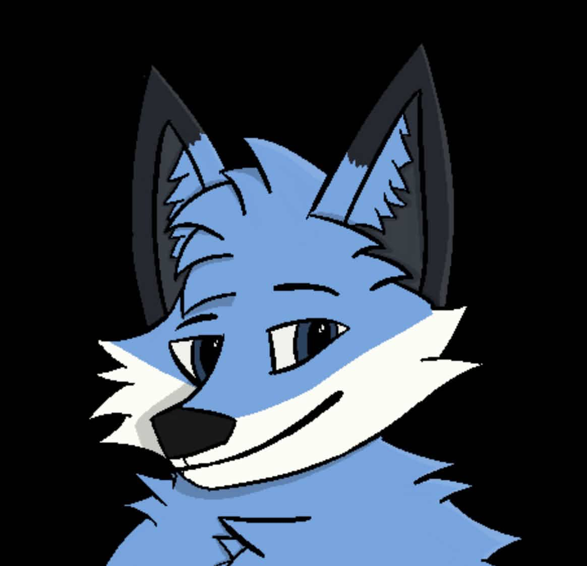
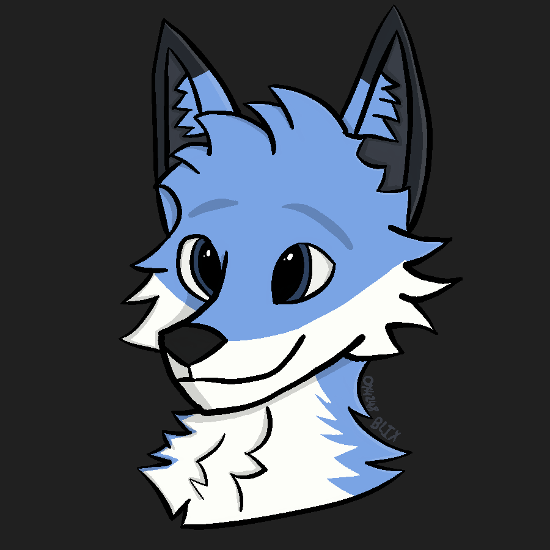
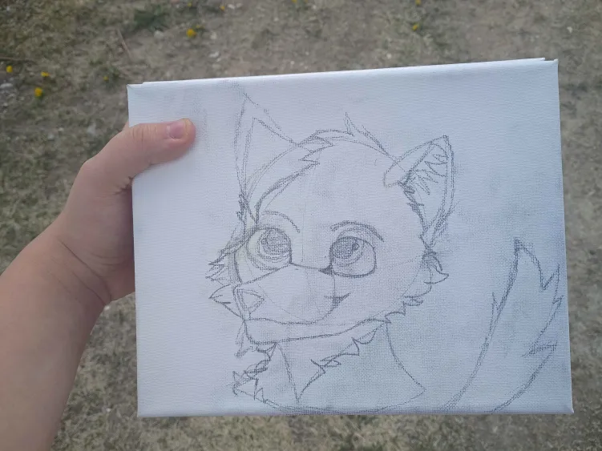

Official Blix artwork and documentation
Created by the original author — news, updates, and reference material.About
Blix is an anthropomorphic folf (fox-wolf hybrid) and my personal fursona. The character features blue, white, and black fur. The name "Blix" comes from the dominant blue ("Bl") plus the "x", which is derived from my username 0x4248.
Key Features
- Folf (fox-wolf hybrid)
- Pronouns: he/they
- Blue, white, light grey, and dark grey fur
- White parts are below nose and go to sides
- Light grey parts are in ears
- Dark grey parts are on the outside of ears
- Blue fur on the inner ear surfaces
- Blue eyes
- Black bandana (optional)
- Paws are a darker blue
- Black nose
- Body
- Two grey stripes on each arm with a thin black outline
- Grey marking near the tip of the tail
- Two larger grey stripes on each leg, similar to the arm markings
- Main blue -
#6ca6ea- Shadow -
#5886be - Light shadow -
#679fe0
- Shadow -
- Light grey -
#383d47- Shadow -
#282a32
- Shadow -
- Grey -
#24282f - White -
#fdfef9- Shadow -
#cbcbcb - Shadow dark -
#a8a8a8
- Shadow -
- Bandana -
#32363b- Shadow -
#222529
- Shadow -
- Eye colour -
#222529
Gallery
Official artwork and reference images:








Donated artwork
Email 0x4248@protonmail.com if you would like to add your artwork!

By Stellaris
Its very cute and I love it; would be cool to see it colored in the future!